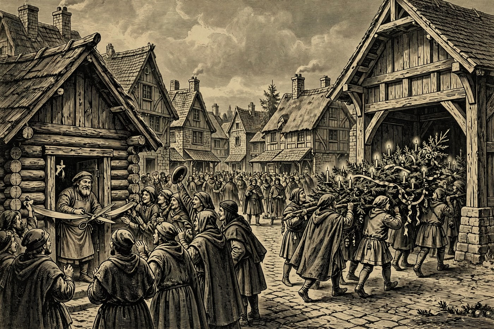

By Muggy · Payson, Ariz.
By Muggy · Payson, Ariz.

PAYSON — Well met, friend of the Hearth, and mind the breeze as you come in — a grey, cool morning rides over the Rim today, with the pines swaying and the sun saving its strength for later. The Hold has glad news to start: a brand-new eatery, The Rim Stop, cuts its ribbon on Main Street this afternoon, with new dishes and drinking chocolate for all comers. Down in Prescott the Festival of Trees opens its doors on a whole forest of decorated evergreens, and across the Holds there is wrestling in the Dome, yoga among the red rocks, art in Show Low, and a market on the move in the Verde. Wrap up warm, traveler — the day is full, even under a grey sky.
Happening in the Holds Today
 Payson— The Rim Stop Ribbon Cutting & Grand Opening — Thursday, Nov. 19 at 2 p.m. at 102 E. Main Street, at the corner of Main and the Beeline. A brand-new Payson eatery in an old log cabin formally opens today, and the kitchen celebrates with new dishes: an Ironwood French-Onion Press, a Harvest Home Turkey & Cranberry, Hatch & Charred Corn Potato Chowder, and peppermint and gingerbread drinking chocolate. The shop keeps regular hours of 8:30 a.m. to 6:30 p.m. with all-day brunch, so come hungry and welcome a new neighbor to the Hold.— Wrestling vs. Holbrook / Winslow at the PHS Dome — Thursday, Nov. 19, weigh-in at 3 p.m., at Payson High School, 902 W. Main Street. The Longhorns host two visiting squads for a home meet in the Dome, and there is no finer small-town Thursday night than bleachers full of neighbors cheering the home team on. Bring the family, bring a loud voice, and let Holbrook and Winslow hear that they have come to Rim Country.
Payson— The Rim Stop Ribbon Cutting & Grand Opening — Thursday, Nov. 19 at 2 p.m. at 102 E. Main Street, at the corner of Main and the Beeline. A brand-new Payson eatery in an old log cabin formally opens today, and the kitchen celebrates with new dishes: an Ironwood French-Onion Press, a Harvest Home Turkey & Cranberry, Hatch & Charred Corn Potato Chowder, and peppermint and gingerbread drinking chocolate. The shop keeps regular hours of 8:30 a.m. to 6:30 p.m. with all-day brunch, so come hungry and welcome a new neighbor to the Hold.— Wrestling vs. Holbrook / Winslow at the PHS Dome — Thursday, Nov. 19, weigh-in at 3 p.m., at Payson High School, 902 W. Main Street. The Longhorns host two visiting squads for a home meet in the Dome, and there is no finer small-town Thursday night than bleachers full of neighbors cheering the home team on. Bring the family, bring a loud voice, and let Holbrook and Winslow hear that they have come to Rim Country. Camp Verde— Artists in the Round — Thursday, Nov. 19 at 11 a.m. in Camp Verde, hosted by the Artist Guild of Camp Verde. Fellow artists are invited to bring a piece of art and share it in the round, and the art-curious are just as welcome to come and talk shop. It is a low-key, friendly midday gathering for makers of every level — bring work in progress, or just bring yourself. The event page carries the venue details and the word on how to join in.— Windmill Park Farmers Market — Thursday, Nov. 19, listed at 2 p.m., at a temporary home in Cornville. The beloved creekside market is trading at an alternate site while Windmill Park is restored after the Nov. 1 flooding, and the growers and makers have carried their stalls with them. Expect the usual happy mix of local produce, baked goods, and handmade wares. Check the event page for the alternate address before you set out down the Verde.
Camp Verde— Artists in the Round — Thursday, Nov. 19 at 11 a.m. in Camp Verde, hosted by the Artist Guild of Camp Verde. Fellow artists are invited to bring a piece of art and share it in the round, and the art-curious are just as welcome to come and talk shop. It is a low-key, friendly midday gathering for makers of every level — bring work in progress, or just bring yourself. The event page carries the venue details and the word on how to join in.— Windmill Park Farmers Market — Thursday, Nov. 19, listed at 2 p.m., at a temporary home in Cornville. The beloved creekside market is trading at an alternate site while Windmill Park is restored after the Nov. 1 flooding, and the growers and makers have carried their stalls with them. Expect the usual happy mix of local produce, baked goods, and handmade wares. Check the event page for the alternate address before you set out down the Verde. Sedona— The Sedona Soul Stretch — Free Group Yin Yoga — Thursday, Nov. 19 at 10 a.m. at Casa Sedona Inn, Sedona. This free one-hour outdoor class, led by Bekah Bush in the inn’s grounds, is gentle, slow Yin yoga open to complete beginners and seasoned practitioners alike. There is no more Sedona way to start a Thursday than breathing deep among the red rocks. Bring a mat, arrive a little early, and let the morning unknot you.— Broken Arrow Run + Happy Hour Tostadas — Thursday, Nov. 19, meeting at 1 p.m. at the Broken Arrow Trailhead, 799 Morgan Rd, Sedona. The AZ Weekday Wheelers run one of Sedona’s most famous off-road trails — rated 4–6, about four to six hours among the red-rock towers — with a drivers’ meeting and hard roll-out right after the meet. Most stock 4x4s with larger tires and high clearance can make it, and tostadas at Javelina Cantina wait at the end. Read the full vehicle and safety notes on the event page first.— The Hub Line Dance Party — Thursday, Nov. 19 at 6 p.m. in Sedona. A free evening of line dancing — donations appreciated — covering Absolute Beginner, Beginner, and High Beginner levels, to soul, rock, pop, and country-western. No partner and no experience are needed, which makes it a friendly, low-pressure night out after a day on the trails. The event page carries the venue details; wear shoes you can slide in.
Sedona— The Sedona Soul Stretch — Free Group Yin Yoga — Thursday, Nov. 19 at 10 a.m. at Casa Sedona Inn, Sedona. This free one-hour outdoor class, led by Bekah Bush in the inn’s grounds, is gentle, slow Yin yoga open to complete beginners and seasoned practitioners alike. There is no more Sedona way to start a Thursday than breathing deep among the red rocks. Bring a mat, arrive a little early, and let the morning unknot you.— Broken Arrow Run + Happy Hour Tostadas — Thursday, Nov. 19, meeting at 1 p.m. at the Broken Arrow Trailhead, 799 Morgan Rd, Sedona. The AZ Weekday Wheelers run one of Sedona’s most famous off-road trails — rated 4–6, about four to six hours among the red-rock towers — with a drivers’ meeting and hard roll-out right after the meet. Most stock 4x4s with larger tires and high clearance can make it, and tostadas at Javelina Cantina wait at the end. Read the full vehicle and safety notes on the event page first.— The Hub Line Dance Party — Thursday, Nov. 19 at 6 p.m. in Sedona. A free evening of line dancing — donations appreciated — covering Absolute Beginner, Beginner, and High Beginner levels, to soul, rock, pop, and country-western. No partner and no experience are needed, which makes it a friendly, low-pressure night out after a day on the trails. The event page carries the venue details; wear shoes you can slide in. Show Low— Art with Friends — Thursdays, 10 a.m. to 1 p.m., at the Art Alliance of the White Mountains, 251 Penrod Rd, Show Low. This weekly Thursday-morning open session invites you to bring your own project and work alongside other White Mountains artists. It is relaxed, social, and drop-in in spirit — painting, sketching, and good company under one roof. The Alliance also hosts the Sunday Merry Mountain Market, so today is a fine day to meet the makers before the weekend.— NPC Performing Arts presents Finding Neverland — Thursday, Nov. 19 at 7 p.m. at the Northland Pioneer College Performing Arts Center, 1611 S. Main St., Snowflake, a short drive from Show Low. The family musical tells how J.M. Barrie created Peter Pan, staged with a cast of 39, with further performances Nov. 20 and 21. Advance tickets run $16 for adults, $14 for seniors, and $13 for students. A proper night at the theatre for White Mountains guests — by the Nine, second star to the right.
Show Low— Art with Friends — Thursdays, 10 a.m. to 1 p.m., at the Art Alliance of the White Mountains, 251 Penrod Rd, Show Low. This weekly Thursday-morning open session invites you to bring your own project and work alongside other White Mountains artists. It is relaxed, social, and drop-in in spirit — painting, sketching, and good company under one roof. The Alliance also hosts the Sunday Merry Mountain Market, so today is a fine day to meet the makers before the weekend.— NPC Performing Arts presents Finding Neverland — Thursday, Nov. 19 at 7 p.m. at the Northland Pioneer College Performing Arts Center, 1611 S. Main St., Snowflake, a short drive from Show Low. The family musical tells how J.M. Barrie created Peter Pan, staged with a cast of 39, with further performances Nov. 20 and 21. Advance tickets run $16 for adults, $14 for seniors, and $13 for students. A proper night at the theatre for White Mountains guests — by the Nine, second star to the right. Prescott— Festival of Trees Prescott — opens Thursday, Nov. 19 and runs through Saturday, Nov. 21, 10 a.m. to 8 p.m. daily, at Sam Hill Warehouse, 232 N. Granite St, Prescott. The 9th annual festival fills the historic warehouse with a forest of decorated trees and wreaths from local businesses that visitors can vote on and shop, with Santa visits, kids’ ornament-making, live entertainment, and raffles. Admission is $10 for ages 13 and up and $2 for kids, and this year’s beneficiary is the Eric Marsh Foundation. It is Prescott’s big holiday-season opener and the finest day trip in this edition.— Fraud Prevention Presentation — Thursday, Nov. 19, 10 to 11 a.m., at the Prescott Police Department, 222 S. Marina Street, Prescott — free. The department’s “Stop, Check, Protect” talk walks through common scams, their red flags, and simple steps to guard yourself and your coin. It lasts one hour and is genuinely useful for residents and winter visitors alike, for scammers grow bolder every holiday season. An hour well spent before the festival crowds.— Circle Trail Completion Ribbon Cutting — Thursday, Nov. 19, 11 a.m. to 12 p.m., at Longview Trailhead, Prescott. The City of Prescott marks the completion of the Circle Trail with a ribbon cutting, celebrating a major piece of the town’s trail network. It is a one-hour outdoor ceremony, listed in the city’s official November notice. Arrive in hiking shoes and you can walk a finished section of the trail straight after the ribbon falls.
Prescott— Festival of Trees Prescott — opens Thursday, Nov. 19 and runs through Saturday, Nov. 21, 10 a.m. to 8 p.m. daily, at Sam Hill Warehouse, 232 N. Granite St, Prescott. The 9th annual festival fills the historic warehouse with a forest of decorated trees and wreaths from local businesses that visitors can vote on and shop, with Santa visits, kids’ ornament-making, live entertainment, and raffles. Admission is $10 for ages 13 and up and $2 for kids, and this year’s beneficiary is the Eric Marsh Foundation. It is Prescott’s big holiday-season opener and the finest day trip in this edition.— Fraud Prevention Presentation — Thursday, Nov. 19, 10 to 11 a.m., at the Prescott Police Department, 222 S. Marina Street, Prescott — free. The department’s “Stop, Check, Protect” talk walks through common scams, their red flags, and simple steps to guard yourself and your coin. It lasts one hour and is genuinely useful for residents and winter visitors alike, for scammers grow bolder every holiday season. An hour well spent before the festival crowds.— Circle Trail Completion Ribbon Cutting — Thursday, Nov. 19, 11 a.m. to 12 p.m., at Longview Trailhead, Prescott. The City of Prescott marks the completion of the Circle Trail with a ribbon cutting, celebrating a major piece of the town’s trail network. It is a one-hour outdoor ceremony, listed in the city’s official November notice. Arrive in hiking shoes and you can walk a finished section of the trail straight after the ribbon falls.
The Days Ahead
- Friday, Nov. 20— Noley’s November Kids Club — Friday, Nov. 20, 1 to 2:30 p.m. at Noley’s, 103 E. State Highway 260, Payson. This month’s club moved to a different Friday because of Thanksgiving week, with story time, crafts, giveaways, and free books donated by Time Out, Inc. Local author Joel Oslund reads his book Bart The Turkey, making it a warm, bookish afternoon for young readers and their grown-ups.— Yavapai County Community Meeting on Flood Recovery — Friday, Nov. 20, 5 to 8 p.m., at the Phillip England Center for the Performing Arts, Camp Verde. District 2 Supervisor Dee Jenkins, the Flood Control District, and other agencies bring updates on infrastructure, permitting, debris removal, watershed work, and assistance programs for neighbors hit by the recent flooding. Serious, practical, and important for Verde Valley readers; ongoing resources stand at YavapaiReady.gov/Recover.
- Saturday, Nov. 21— Payson Turkey Trot — Saturday, Nov. 21 in the morning at Green Valley Park, 1000 W. Country Club Dr, Payson. Payson’s annual pre-Thanksgiving trot offers a 5K or a 1-mile option around the park lakes, with prizes for categories including fastest stroller and best themed outfit, and event shirts while supplies last. Listings differ on the exact start hour, so check paysonparks.com before you lace up. Either way, a crisp morning run is the finest way to earn Thursday’s dinner.— Show Low Turkey Toss 2026 — Saturday, Nov. 21, check-in 9 a.m., shotgun start 10 a.m., at Show Low City Park and the Show Low Disc Golf Course. This charity disc golf tournament benefits the White Mountain Community Food Bank: one round of 25 holes for only $10 a player, with every coin donated. Trophies are awarded, and players also get a chance to win a turkey — the most fitting prize of the season.— Free To Be Me Drumming — Saturday, Nov. 21, 12 to 2 p.m., at Posse Grounds Park Pavilion, 525 Posse Ground Rd, Sedona — free. Sedona Parks & Recreation partners with the long-running Free To Be Me drum circle, 35 years of rhythmic, family-friendly community drumming, back at the pavilion. All ages are welcome and no experience is needed; just show up and join the beat under the red rocks. It is one of the most reliably joyful free gatherings in Sedona.
- Sunday, Nov. 22— Chamber Music Sedona — Revolutionaries: Beethoven and America — Sunday, Nov. 22 at 3 p.m. at the Sedona Performing Arts Center, 995 Upper Red Rock Loop Road, Sedona. The 44th season opens with a program marking 250 years of American independence and the approaching 200th anniversary of Beethoven’s death. It is a grand afternoon of music among the red rocks, well worth the drive for Hearth guests. Tickets and season details stand at ChamberMusicSedona.org.— Merry Mountain Market — Sunday, Nov. 22, 11 a.m. to 3 p.m., at the Art Alliance of the White Mountains, 251 Penrod Rd, Show Low. The weekly Sunday handmade gift market gathers local artisans, farmers, bakers, and makers who create at least 80 percent of what they sell. It is ideal early Christmas shopping that keeps coin in the White Mountains. A gentle, browsable Sunday outing, with art on the walls inside as well.
- Tuesday, Nov. 24— Pine Ridge Marketplace Annual Holiday Tree Lighting — Tuesday, Nov. 24 in the early evening at 3250 Gateway Blvd, Prescott. The marketplace lights its holiday tree for the third annual celebration, an early-evening, family-friendly kickoff to Prescott’s Christmas City season. Expect the tree, the crowd, and the first real feel of the holidays, all free to attend. Listings differ by half an hour on the start, so check the marketplace page before you go, and arrive early for parking.